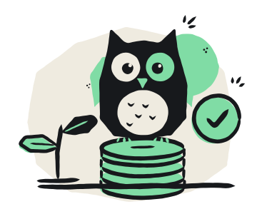

E-mail confirmado!
Agora é só entrar.
- Conta criada
- E-mail confirmado
- 3Entrar
Depois de entrar, vocês montam o espaço do casal e já veem quanto ainda podem gastar no mês.

Agora é só entrar.
Depois de entrar, vocês montam o espaço do casal e já veem quanto ainda podem gastar no mês.